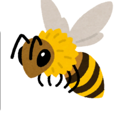

Mortes em massa no Brasil
Diversos episódios foram registrados nos últimos anos. Um caso amplamente divulgado ocorreu em 2023, em Mato Grosso, quando mais de 100 milhões de abelhas morreram após aplicação irregular de fipronil em uma lavoura de algodão, segundo relatos de apicultores e investigações das autoridades.
Uma revisão publicada em 2021 destaca três fatores do modelo agrícola industrial que afetam as abelhas:
expansão do desmatamento;
uso intensivo de agrotóxicos;
cultivo em larga escala de monoculturas e variedades transgênicas.
Os autores ressaltam que há evidências tanto de efeitos agudos (mortes imediatas) quanto de efeitos crônicos, como alterações fisiológicas e comportamentais que enfraquecem as colônias ao longo do tempo.
Como ajudar:
Plante flores que produzam néctar e pólen;
Evitar o uso de pesticidas e inseticidas;
Preserve áreas verdes e evite destruir colmeias;
Apoie o comércio de mel responsável;
Ajude a conscientizar.


Como o agronegócio pode afetar as abelhas
1. Uso de agrotóxicos
Inseticidas, especialmente os neonicotinoides e o fipronil, podem matar abelhas diretamente ou afetar sua capacidade de navegação, reprodução e busca por alimento.
Estudos brasileiros registraram mortes em massa de colmeias após pulverizações agrícolas, principalmente quando houve uso inadequado ou irregular de produtos.
2. Monoculturas
Grandes áreas cultivadas com uma única espécie vegetal reduzem a diversidade de flores disponíveis ao longo do ano.
Isso limita a oferta de pólen e néctar, enfraquecendo as colônias.
3. Desmatamento
A expansão agrícola pode eliminar habitats naturais onde vivem abelhas nativas.
A fragmentação das áreas naturais dificulta a sobrevivência e reprodução desses polinizadores.
Biodiversidade
Ao polinizarem flores, elas permitem que muitas plantas se reproduzam, preservando florestas, campos e outros ecossistemas.
As abelhas são responsáveis pela polinização de cerca de 75% das principais culturas agrícolas do mundo e de aproximadamente 90% das plantas silvestres com flores.
Sem elas, haveria redução na produção de alimentos, perda de biodiversidade e impactos econômicos significativos.
O consenso científico
Os pesquisadores concordam que:
• o uso inadequado de agrotóxicos representa uma das principais ameaças às abelhas;
• a expansão agrícola pode reduzir habitats e recursos alimentares;
• não existe uma única causa para o declínio das populações de abelhas.
Doenças, parasitas (como o ácaro Varroa), mudanças climáticas e perda de biodiversidade também desempenham papel importante.